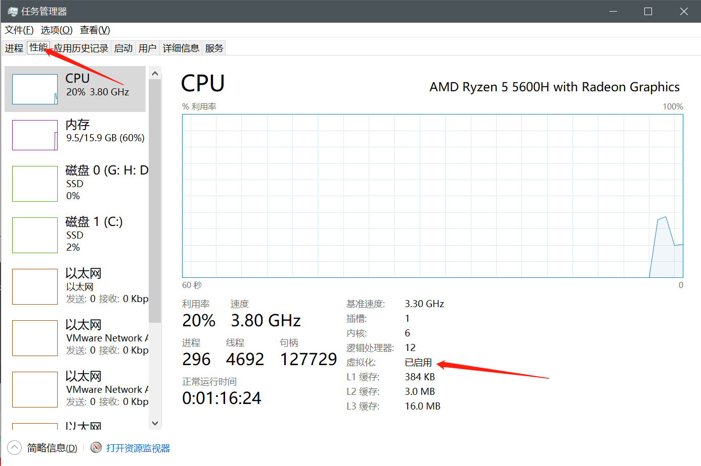
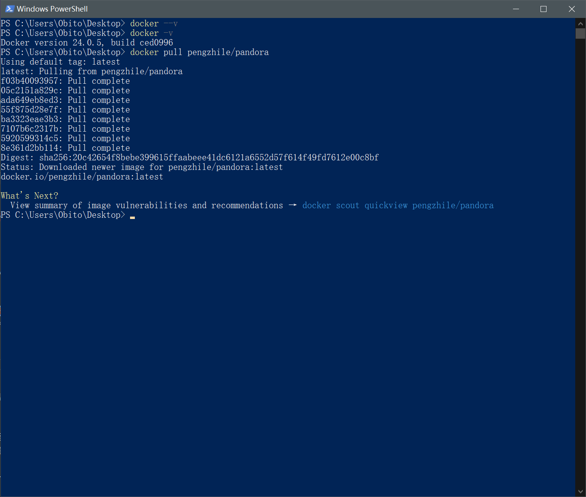
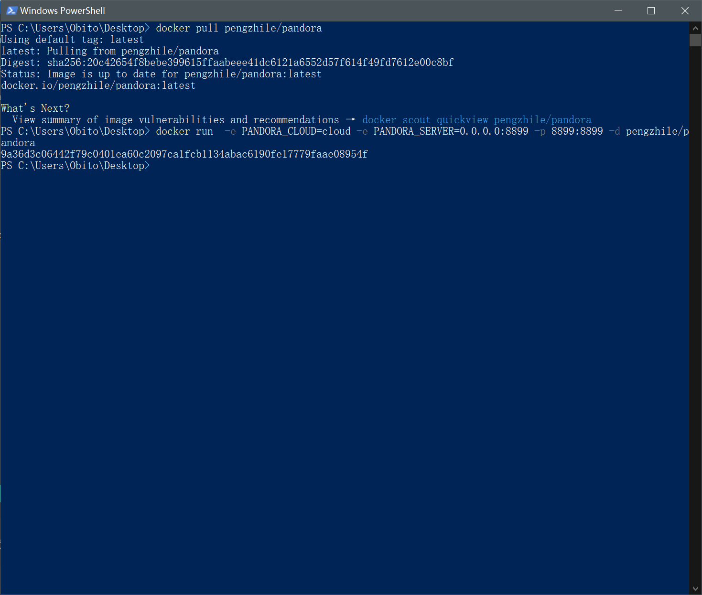
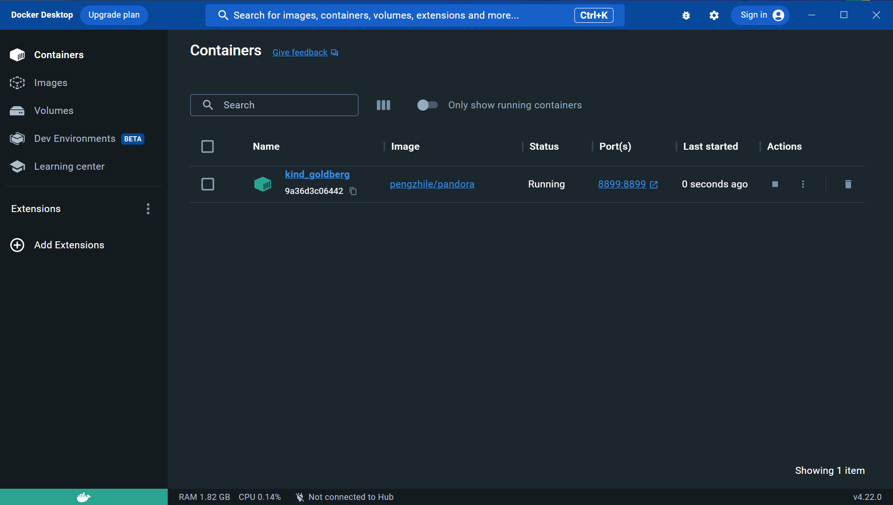
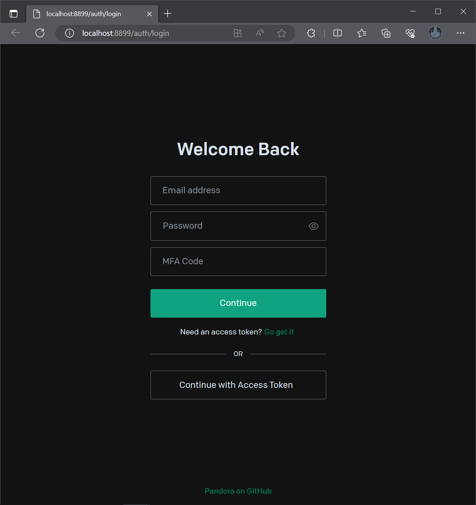
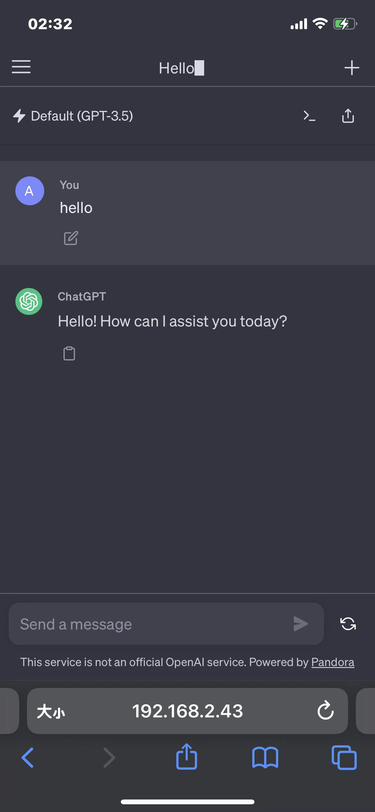

Windows使用Docker访问ChatGPT
前言
冲浪发现好玩的东西，于是就开干！
直接通过 ChatGPT 官网可以免费使用，但是奈何魔法不够强大(money 不够┭┮﹏┭┮)，经常会访问不了，或者超慢的生成速度。
网上有一种方式，是利用 Github + Vercel 部署绑定自有的域名，通过调用 OpenAI API Key 实现在国内访问使用其功能，但是这种方式既需要有自己的域名，又需要有额度的 ChatGPT 账号，新注册的账号有免费额度 5 美元，但只有注册的前三个月有效。于是就衍生了这种白嫖的方法——潘多拉(Pandora)项目，目前刚开始使用，体验很不错！
前置条件
- 一个能用的 ChatGPT 账号
- 能够科学上网
环境配置
检查环境
首先你需要先检查一些电脑是否已经开启虚拟化，打开任务管理器，点击性能、CPU，右下角即可看懂是否开启。

若是没有启用的话，则需要通过进入 bios 下进行设置；这一部分可以上网搜索一下 windows 开启虚拟化，因为不同机子的 bios 界面不太一样，这里就不给出操作步骤了，操作很简单的。
其次你如果你是 Windows 家庭版则需要安装 Hyper-V，安装方法也很简单。
新建一个文本文档，CV 以下代码，然后保存并将文档后缀改为 bat，右键选择以管理员身份运行，运行完重启即可。
1 | pushd "%~dp0" |
安装 Docker
打开 Docker 官网 选择 windows 系统然后一股脑安装即可。
Docker 部署项目
1 | docker pull pengzhile/pandora |

创建容器绑定端口
1 | docker run -e PANDORA_CLOUD=cloud -e PANDORA_SERVER=0.0.0.0:8899 -p 8899:8899 -d pengzhile/pandora |

Docker软件内可以看到项目正在 running

Port 栏下的端口号是蓝色的超链接，点击可跳转网站登录页面；页面有两种登陆方法，一种是账号密码另外一种是 token 方法。这里我们使用 Acess Token的方法登陆，token 的有效期是 14 天，采用这种方法后，我们以后只需要在有效期失效的时候打开魔法去获取 token 即可。
PS：当然当你不需要用到时，你可以点击关闭容器以免占用你的资源。

获取 Acess Token
方法一
先在 ChatGPT 官网登陆你的账号，然后新页面输入获取 Token 即可一堆 JSON 数据，找到 “accessToken” 复制相对应的内容即可。
注意：一定是要在你登陆账号的那个浏览器下，比如你用 Chrome 登陆，你就要在 Chrome 查看才能看到相对应内容；并且不能是无痕浏览模式下。
方法二（自己瞎搞完才知道方法一）
获取 Acess Token 方式可以下载游览器扩展：登陆 ChatGPT 网站前按下 F12 打开开发者工具，找到 Network(网络)选项下，左边的name 栏下找到 session 并点击。

然后在右边一栏中点击 Response ，找到 “accessToken”，将后面的一大串字符串复制下来（复制完不双引号记得去掉）。

然后返回刚刚的本地界面选择 Continue with Access Token，将获取到的 token 复制进去即可成功登陆。
其他设备与该电脑处在同一局域网下的话，也可以一起使用，使用方式为：在浏览器中输入该电脑IP:8899，同样可以访问，不过也需要登陆。

访问速度非常丝滑！